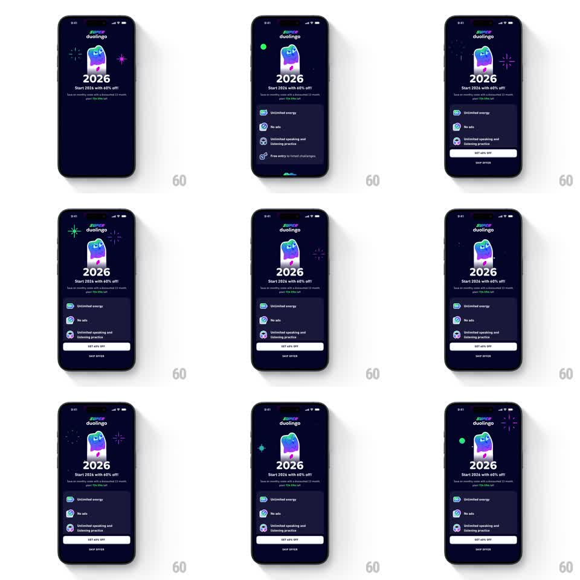

Media
Frame-by-frame

Rebuild this animation 1:1: Duolingo's 2026 offer screen - neon fireworks pop one after another around the gradient Duo mascot while the perks list and GET 60% OFF button sit below.

Rebuild this animation 1:1: Duolingo's 2026 offer screen - neon fireworks pop one after another around the gradient Duo mascot while the perks list and GET 60% OFF button sit below. ## Integration Integration: stack-agnostic spec - springs given as stiffness/damping, timed motions as duration + curve; map every value to your framework and animation library of choice. ## Scene Duolingo offer, dark navy: SUPER duolingo logo, the Duo owl in a purple-blue gradient, huge "2026" with "Start 2026 with 60% off!" and subcopy, a perks card (Unlimited energy, No ads, Unlimited speaking and listening practice, Free entry to timed challenges), a white "GET 60% OFF" button, and "SKIP OFFER" text. Fireworks: small neon starbursts (green, blue, purple, pink) around the mascot. ## Motion spec Pattern: staggered neon firework pops ringing the mascot. - The screen composes first: mascot, 2026, and copy fade up (300ms), perks card slides up (300ms), button fades in last (200ms). - Then the fireworks loop: every ~500ms a new starburst pops at a random point on an invisible ring around the mascot - it flashes in as a 4-8 spoke star (scale 0 -> 1, 120ms), holds 200ms, and fades while shrinking slightly (300ms). - Each burst's color cycles green -> blue -> purple -> pink; never the same color twice in a row. - Every third firework is larger and sheds 5-6 tiny dots that drift outward and fade (400ms) - an occasional crescendo. - The mascot idles with a gentle bob (translateY +/-4px, 3s) throughout; the UI below never animates. ## Calibration - Bursts stay inside a ring band around the mascot - never over the copy, the button, or the perks card. - Max two bursts alive at once; the screen should twinkle, not strobe. ## Reduced motion A single static starburst arrangement; no loop. ## Don't miss - The fireworks are thin neon line-stars, not particle sprays - drawn spokes, not confetti. - The 2026 numerals are huge and heavy - they anchor the composition while sparks play at the edges.